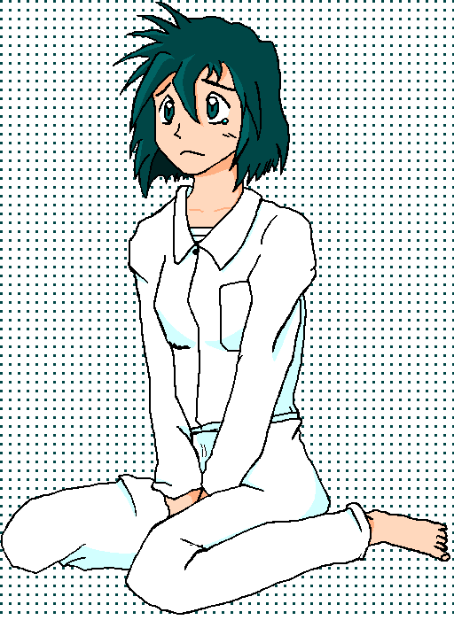

プロローグ
都心にそびえたつ、外資系企業の社長室。鍵の閉ざされた重厚な扉の向こうで、一人の男が社長に向けて不気味な足取りで歩み寄っていた。男の手に握られている拳銃を見て、社長は血相を変えて椅子から立ち上がり壁まで後ずさりした。
｢み、三田村君、何を･･････？｣
三田村と呼ばれた男は表情一つ変えず、ゆらりゆらりと迫ってくる。恐怖が全身を支配して、社長は助けを呼ぶことすら出来なくなっていた。
刹那、数発の銃声が耳元に響く。
いや、銃声は社長室の外から聞こえたようだ。撃ったのは三田村ではないらしい。
三田村が不審に思って扉の方に顔を向けた、その時だった。
「そこまでだ三田村敏明！」
鍵がしっかりかかっていたはずの扉が、勢い良く蹴破られたのだ。ドアノブ周辺が銃痕だらけになっている。防犯上頑丈に作られた社長室の扉も、銃弾の前には成す術が無い。
開け放たれた入口からは次々と警官が突入し、瞬く間に社長室は多数の警官であふれかえった。
最後に、一人の刑事と一人の少年が社長室へゆっくり入ってきた。二人は警官たちをバックにして、毅然とした態度で三田村と社長の前に立った。
刑事には見えないずいぶんと若い青年が、一歩前に歩み出た。
「人事部長三田村敏明。アンタが会社を乗っ取ろうとしておこなった数々の犯罪、このオレが全て見通した！」
「な、なぜだ！？私はあの日、確かに別の場所ヘ接待に行ったって……」
三田村は“アリバイ”を盾に取るつもりなのだろう。
「残念だったな。アンタにアリバイなんて、初めからなかったのさ。あの日、アンタが使ったと言った列車は乗客の急病で長時間停車している。間に合うはずがないんですよ、接待の時間までね！指定席の予約があったから騙される所だったよ。そう、アンタは電車じゃなく、車を使ったんだ。車なら犯行時刻に間に合わせる事が出来るし、接待の時間にもなんとか間に合う事は実証済みだ。アンタがレンタルした車も判明したし、その車が犯行現場のすぐ近くで路上駐車していた事も確認が着いた。さあ、アンタの謀略もここまでだ！！」
青年の言葉に応じて、ベテランの風格漂う刑事が懐から逮捕状を取り出してはっきりと見せつける。
「三田村敏明。窃盗・傷害・住居不法侵入及び公文書偽造の容疑、ならびに銃器不法所持と傷害未遂の現行犯で、逮捕する！」
「クッ……！」
三田村は唇をかみ締めると、社長をつかみあげて拳銃を突きつけた。
「よ、寄るな！この古ダヌキを殺して、俺も死ぬ！！」
押さえようとした警官たちは足を止めた。
反射的に青年が脇へと跳んだ。反射的に銃口を向ける三田村。それよりも早く、青年は懐から銀色の拳銃を取り出していた。青年の拳銃が爆音を轟かせ、三田村の拳銃を弾き飛ばし、さらには右肩をかすめる。
ひるんだ三田村を刑事は逃がさなかった。すぐにその手を押さえつけ、手錠をかける。
「１６時２５分、被疑者確保……」
刑事は腕時計を確認し、ホッと一息ついた。視線の先で、先ほど拳銃を発砲した青年が起き上がっていた。その表情は凛呼として引き締まっているが、とてもベテラン刑事と組んで仕事をするような年齢には見えない。
「相変わらず勇猛豪胆だな、秋野くん」
感心ともあきれともとれる刑事のつぶやきに、青年はニカッと年相応の笑みをかえした。
逮捕した三田村を連行し、パトカーへと連行する警官たちを待っていたのは、マスコミの記者たちによるカメラと質問の嵐だった。
いや、どうやら記者たちの標的は青年のほうにあるようだ。
「今回の事件は、どのような経緯で解決に向かったのですか？」
「犯人の決め手となった、証拠は？」
「今回、秋野くんはどのようなご活躍をしたのですか？」
投げかけられる質問攻めにも青年は一切応じようとしなかった。
パトカーに載りこもうとしたところで、彼ははじめて記者たちの方を振り向いた。無数のフラッシュにもまったく動じず、ただ一言、静かにこう告げた。
「真実を見せる。それだけが、ボクの仕事です」
翌日の朝刊のトップを飾ったのは、この青年の姿だった。パトカーを背景に「S字立ち」している青年の横には仰々しいまでに派手なレタリングが施されていた。
「またまた難事件解決！
高校生名探偵 秋野 薫」
Gentlegirl
作：ＴＲＡＣＥ
１．永別
東京の閑静な住宅街にある、こぢんまりとした喫茶店「ワトソン」。
そこのマスター、和越村君（わえつ むらなお）は喫茶店においてあるスポーツ新聞に目を通していた。一見どこにでもいそうなオジサンではあるが、母親ゆずりの美貌を備えた娘がいることが大きな自慢であった。
「『高校生名探偵』ねェ……」
マスターはひとりごちると、店内の片隅でテレビの前に釘付けになっている二人組に視線を移した。そのうち一人は、新聞に大きく掲載されている青年と同一人物だ。だが、今熱心にテレビを見ている彼と紙面上の彼はまるで放つ空気が違う。今の彼は高校生という年相応の空気を放っているのだ。
二人が見入っているのは以前録画したビデオだった。
テレビの画面上で、何やら兵士たちが慌ただしく動き回っている。
『待てアルト！今の我々は捕虜の身分のはずだぞ！出過ぎたマネはやめろ！！』
『ここで出過ぎなきゃ、俺たちが潰されちまうだけだよ！』
一人の少年がタラップを駆けて、一機の全高１３ｍほどの巨大な戦闘ロボットの胸部コクピットへ滑り込む。この戦闘ロボットがいわゆる「主人公機」なのだろうが、ゴーストグレーを基調とした塗り分けの本機はかなり凶悪なツラがまえをしている。凶悪なフォルムと言うところは「後半主人公機」のお約束である（筆者の個人的な思い込みである）。
『このアルト=フジシマが行かなきゃ……セイバークラフトMk II、飛ぶぞ！！』
主人公機のツインカメラが赤々と発光した。いわゆる「アイキャッチ」である。
そこでＣＭがはいった。
「あーくそ、いいところでＣＭかよ……」
「だったら早送りすればいいだろ、薫」
「あ、そっか」
マスターに指摘されなくても、普通はそうすると思うのだが。
しかし薫と呼ばれた青年はいっこうに早送りをしようとはしない。有名なゲームシリーズ最新作のＣＭが流れていたので見入っているのだ。
「おぉ！次回作でパト●イバーが参戦するってウワサはマジだったんだ！！」
「そう熱くなるなって、工藤……わ！グリ●ォンとアル●ォンスの合体技！？」
「しかも零式にバックドロップしてる……あ、３号機がチラッと見えた」
「ゼロはさすがに出てこないかな……？」
どうやらこの二人、無類のロボット好きのようだ。
そんな二人の姿を横目に、マスターは一人ため息をつくのだった。
「『高校生名探偵』ねェ……」
その時、ビデオが突然止まった。
何者かの人差し指がビデオの停止ボタンに触れている。薫は視線を指先から次第に相手の上半身ヘ移していく。
そこにいたのは薫や工藤と同年代の少女だ。頭頂部に少しクセ毛のあるロングヘアーを持ち、長身もあいまってモデルばりの見事なプロポーションを誇っている。
「あ、マキ」
「『あ、マキ』じゃないわよ！まったく……せっかく昨日はケーキをおごってあげる、って約束してくれたのに、なんでテレビなんかに出てたのよ！？」
まだあどけなさの残る顔とはうらはらの鋭い口調で薫に言い寄ると、今度は急にしんみりとしてしまった。
「せっかくわたしがいろいろ気を遣ってあげてるのに……どうしてアンタはわたしの気持ちに気付いてくれないの？」
「マキ……ごめん、オレ……」
と、うつむいていた少女が急に笑いだした。
「……クククク……」
「……マキ？」
「バーカバーカこの推理バカ。ひっかかってやんのひっかかってやんのこの推理バカ。何が『真実を見せる』よ、この推理バカ！」
「推理バカってな……アホか、おめーは……」
薫もこの少女の前ではすっかりたじたじのようだ。
この「マキ」と呼ばれている少女の本名は平井真貴子（ひらい まきこ）、「真貴子」だから通称が「マキ」な訳である。薫とは幼なじみで、当人たちは絶対に否定するが相思相愛の友達以上恋人未満な間柄なのは一目瞭然だ。
「ま～ま～ご両名、ここは友人である俺の顔に免じて……」
「アンタみたいなオタクに用は無いの」
一蹴された工藤であった。
「『高校生名探偵』ねェ……」
マスターはさらにため息をついた。
千葉県成田市、新東京国際空港。
その到着ゲートに一人の男が降り立った。
このような場には余り似つかわしくない白い背広も、端正な顔つきをしたこの男がまとっているだけで自然に見えるから不思議だ。
海外から帰国した割にはやけに少ない手荷物を片手に、男はトイレへと入っていった。
その男を尾行する集団がいた。男とは対照的に、目立たない地味な服装に見を固めている。しかし一人だけ、シルクハットに黒装束、おまけにサングラスといったまるで一昔前の映画に出てくるギャングのような風貌の男がいた。やってる本人は乗り気なのだろうが、他人から見ればどっかの勘違い田舎ヤクザか単なるコスプレにしか見えないだろう。
「高橋くん……やっぱ、メチャクチャ目立ってるわよ」
キャリアウーマンといった感じの女性が後ろから声をかけた。確かに、空港でこんなギャングのような格好をしてぶらついていたら職務質問されて署に連行されるオチが待っている。
「そうですか？なんかＦＢＩかＣＩＡって感じで、いい気分ッすよ」
口調の軽さはギャングばりの外見とは違和感だらけだ。
「Shhh！ Be quiet！」
突然女性が口に指を当てて、殺気立った視線を別な方向に走らせた。獲物を見つけたハンターのように鋭い視線の先には、トイレに入っていく白い背広姿の男。
「やはり奴ね……『江戸川乱歩』……」
口の中でつぶやき、トイレに向かって歩き始める。
「倉主さん！？」
「……All right．倉主巡査部長を信じなさい。高橋くんたちは周辺の監視を続けて。共犯者がいる可能性もあるのよ」
「はっ！」
そこに居合わせる数人が、女性に敬礼をする。
またトイレヘ近付き始めた女性は、懐から小型のリボルバー拳銃を取りだし、撃鉄を後退させる。拳銃はニューナンブと呼ばれるミネベア社製のもので、警視庁が制式採用しているのはこのニューナンブである。
どうやら、この倉主という女性を中心とした一団は警官のようだ。
男が手を洗っているのを入口から確認すると、倉主刑事は間髪入れずに男子トイレ内へと駆け込んで拳銃を構えた。
「Hold it！」
白い背広姿の男は一瞬たじろぎつつも、すぐに倉主の拳銃をつかんだ。
「ッ！？」
引き金にかけた指が動かない。入や、引き金自体が動かないようだ。リボルバー拳銃は構造が単純なため、弾を込めるシリンダー部を押さえられると、引き金が引けなくなってしまうのだ。白い背広姿の男が握っていたのはまさにシリンダーの部分だった。
「意外に早かったな」
男の口調は静かだった。
「名前は？」
「は？」
「君の名前だよ。君たちはわたしを知っているだろ？」
「……倉主。倉主悠（くらぬし はるか）巡査部長よ」
「なるほど。では倉主刑事、君の上司に報告したまえ。
『凶悪犯・江戸川乱歩は、日本政府と警視庁に挑戦を申し込む』とな！」
それだけを言って不敵な笑みを浮かべると、男は身を翻して倉主に背を向けた。急な行動で、倉主は彼を撃つ機会を失ってしまった。
周辺を見張っていた高橋刑事たちが、白い背広姿の男がトイレから駆け出していくのを目撃したのはその直後だった。
「え……江戸川乱歩！？」
見間違いかと思ってサングラスをずり下ろしてみたが、あの白い背広を見まごうはずがない。すぐに懐から拳銃を取り出した。自分の射撃の腕前も忘れて……。
「Wait！」
間一髪止めたのは倉主だった。
「倉主さん！ケガは？」
「してないのは分かるでしょ！そんな事より、今ここで発砲すれば騒ぎが大きくなって奴を見失うだけよ。早く後を追いなさい！逃げられてしまうわよ！！」
「は、はい！」
高橋たちが敬礼し、慌てて白い背広姿の男の後を追い始めた。だが、男を見失うのは時間の問題だろう。そうでなければ、自分たちがここまで苦労するはずがない。
その場に残った倉主は考えこんでいた。
日本政府と警視庁に挑戦を申し込む、ですって？江戸川乱歩、今回は一体何をやらかそうというの……？
少し暗くなり始めた住宅街のなか、買い物袋をぶら下げている薫の姿があった。すっかり気の抜けた何とも言えない表情は、昨日難事件を解決した高校生名探偵のものとはとても思えない。
薫は喫茶ワトソンのマスターに頼まれて、食料品の買出しに行っていたのだ。マスターにはちゃんとした娘・和越乃恵美（わえつ のえみ）がいるのだが、彼女は喫茶ワトソンの看板娘。あまり店を外させたくはなかった。薫本人にしても、マスターには日頃から公私両面でかなり世話になっているから、これくらいの手伝いは快く引き受けているのである。
喫茶ワトソンの店先に、一人の少女が立っている。
「うう、いよいよ寒くなってきたな……」
冬の訪れを告げる北風に身を震わせた少女は、自分の腕で身体を抱きしめた。本人は無意識に行った動作だろうが、男からはとても色っぽく見える動作である。そこがこの少女を看板娘たらしめている所以なのだろう。
「よっ乃恵美！」
薫は威勢良くその少女に挨拶をする。少女もすぐに気付いた。
「あ、薫くん」
乃恵美はポニーテールを揺らして振り返り、ニッコリと笑った。年齢的には薫より１、２歳ほど年下だろうか。
「そうだよなぁ、たしかに寒くなってきたよな。雪、降るかも」
「まさかぁ。まだ１１月なのに？」
「月刊Hobbix（ほびっくす）は１２月号だよ。今ごろ１月号の編集中なんじゃねーの？」
「コラコラ、雑誌の話にはしないでよ」
二人は楽しそうに話に花を咲かせていた。
薫と乃恵美はまさに兄妹のような関係だった。薫の悪友・工藤に言わせれば、乃恵美は「理想の妹」像なんだそうだ。そんな乃恵美に慕われている薫は周りの男からよくうらやましがられている。しかし、薫と乃恵美の関係はそれ以上進展しないのも事実ではある。
だが、その楽しい会話のひとときはあまりにも唐突に打ち壊された。
静かな住宅街に響き渡った銃声がそのきっかけだった。
銃弾が薫の右肩を貫通し、傷口から血が吹き出す。
「おおおおあああッ！？」
振り向いた先では、一人の男が鬼のようの形相で銃口を向けていた。
「お前が……お前がいなきゃ、俺たちは潰されずに済んだんだ！」
その台詞で、薫は相手の正体を悟った。
昨日の事件で三田村容疑者が雇っていた一団が今朝、東京地検の強制捜査のメスを受けたのだ。おそらくこの男は一団の一人で、不祥事を解明したせいで一団が潰される事になって追い詰められ、解明した張本人である薫を逆恨みしたのだろう。
「薫くん！」
乃恵美が駆け寄ってくる。
だがこのままでは乃恵美を巻き添えにしかねない。薫は叫んだ。
「来るな、乃恵美ッ！！……グッ！？」
さらに新たな銃弾が腹部に命中した。
男の憎悪が銃弾となり、次々と薫の身体を襲う。
脚に、腕に、腹に、胸に、拳銃の全弾が叩きこまれる。
傷口から鮮血がはねて、道路を赤く染め上げた。
それでも、力を振り絞って懐から拳銃を引き抜く。銀色に光るかなり大型の拳銃の名はデザートイーグル。５０口径、１２．７㎜という大口径を誇る拳銃で、護身用と言うよりは軍事用、狩猟用と言った用途で用いられる。社長室の扉を破壊したのもこのデザートイーグルだった。
そのデザートイーグルの銃口から、薫の断末魔にも似た一発が撃ち放たれた。
重傷を負ったとはいえ、薫の射撃の腕前は驚異的な正確さを誇っていた。弾丸は男の眉間を寸分の狂いもなく撃ち抜く。ほぼ即死である。
だが状況は薫もさほど変わらない。彼は全身に銃弾を受けているのだ。
「薫くん、薫くんッ！……いやーっ！！」
銃声に加え、尋常ではない娘の悲鳴にマスターは店を飛び出してきた。
否応無しに悲惨な光景を目の当たりにする事になる。全身血まみれの薫が目の前でがくりと崩れ落ち、奥手には素性の知れない男が頭から血を流してうつぶせになっていた。
「か、薫！―――乃恵美、救急車だ、早く！！」
「う、うん！」
マスターはすぐに薫を抱き起こした。マスターのエプロンに血がべっとりとつく。すでに薫の息は弱まりつつあり、すっかり血の気が引いていた。このままでは助かりそうもないことは明らかだ。店内に運んでみたものの、もはや成す術は無かった。
―――いや、助かるかもしれない方法がひとつだけある！
マスターは意を決し、奥の倉庫へと駆け込む。そして封印するように倉庫の奥深くに置かれていた薬品を取りだし、栄養ドリンクと注射器も携えて戻ってきた。
マスターはおもむろに薬品を注射器に注入する。通報を負えた乃恵美もそこに駆けつけた。しかし、父親は注射器を手にしている。
「パパ？……まさか、それは！？」
乃恵美は薬品の正体を知っているのだろうか。
「―――そう、そのまさかを使う時が来たんだよ」
「でもそれは絶対に危険だってパパ自身が……」
「わかっとるさ！……だが、このままでは薫は間違いなく手遅れになる。ならば０％の可能性でも、イチかバチか奇跡を信じてやるしかない！！」
「パパ……」
まだ残る迷いを振り切るように、マスターは今一度意を決して薫の左肩口に注射の針を打ちこんだ。状況は一刻を争うため、心臓近くの大静脈に注射するといったかなり思いきった手法である。後は栄養ドリンクも直接注射して、なんとか止血せねばならない。それでも、この手段で薫が助かる確率はまったくないのだ。救急車が来るまでの数分間も、マスターと乃恵美に取っては恐ろしく長い時間だった。
サイレンを響かせて救急車が店先で止まり、すぐに薫を搬送して全速力で走り出す。しかしその間も薫の息はさらに弱々しくなっていく。銃弾の一発が心臓付近で留まっているらしく、その生命はまさに絶望的だった。同行したマスターと乃恵美も、救急隊員の説明に顔を伏せるしかなかった。
だがしばらくして、薫の容態を見ていた隊員の一人が奇声を上げた。
「うわっ、な……なんだコリャ！？」
その場の緊張に似つかわしくない、妙に甲高い声だった。
「どうした！？患者に何があった？」
「……き、傷口が再生していきます……それも、すごいスピードで……」
「何ぃ？」
タチの悪い冗談のようにしか聞こえなかった。疑いのまなこで薫の傷口を診た別の隊員は、しかし次の瞬間絵に描いたように凍りついた。
「……さ、再生してる……」
救急隊員たちもこれまで多くの患者と立ち会ってきたが、今、目の前にいる患者のように傷口が驚異的スピードで自己再生していく人間など、見たことも聞いた事もなかった。いや、そもそも生物学的にありえない。
マスターと乃恵美は思わずお互いの顔を見合わせた。何か思い当たる節でもあったのだろうか。
そして、さらに隊員たちを驚愕させる事態が続けざまに起こった。
「……うっ、ううう……」
つい数分前まで生死の境をさまよっていたはずの患者･薫が意識を取り戻したのだ。いつのまにか出血も既に止まっている。
「な、なんて生命力なんだ……」
「薫……」
マスターは身を乗り出して、ベッドに横たわる薫の顔色をうかがった。脂汗を額に浮き上がらせているものの、顔色はかなり良くなっている。
薫は重いまぶたをゆっくりと開く。
「マスター……それに乃恵美……オレは一体……？」
数分前まで生死の境をさまよっていたはずの薫が口を聞けるほどに回復するなど、もはや医学の常識を超えた奇跡に近かった。普通ならここで、車内に居合わせた人々は手に手を取り合って薫の無事に歓喜し、人知の及ばざる脅威的生命力の存在に感嘆するところだっただろう。
だが彼らにそれをする事はできなかった。なぜなら次の瞬間、奇跡とすら思えない事態が発生したからである。
心拍数が一瞬のうちに、平常時の３倍近くまで跳ね上がった。
「な、何だ！今度は一体何があった！？」
「わ……わかりません！心拍数が急に……」
我が目を疑うような状況をこの車内で何度も見せつけられた隊員たちの心理状態は、もはやパニックの一歩手前状態だった。人知を超えた生命力、なんて悠長な事は言っていられない。
薫本人にしてみれば、さらに深刻な事態である。
「……ッ！？うおおおおああああっ……！」
いくら呼吸してみても息苦しく、心臓が張り裂けそうだ。
身体中が沸騰したように熱い。
全身に得体の知れない疲労が蓄積されていく。
オレは……死ぬのか……？これが、死ぬという事なのか……？
「薫！」
「薫くん！？」
夕焼けが落ち始めた東京の空に、救急車のサイレンがむなしく響き渡っていた。
街随一の大型病院、中畑総合病院に向かってひたむきに疾走する少女がひとり。頭のクセ下を揺らし、ロングヘアーを駆け抜ける風になびかせて走っている。ロングコートの下には制服のブレザーが顔を覗かせている。息を弾ませるその表情はとても不安そうだ。
真貴子は今朝のホームルームで薫が入院したという報告を担任から聞かされるや否や、いても立ってもいられずに一時限目そっちのけで学校を飛び出したのだ。薫は今日珍しく無断で欠席し、連絡さえも取れなかった。どっかの事件に出かけるときも必ずホームルームには顔を出すし、病欠はおろか遅刻した事さえない、皆勤を貫いていた薫である。何か不自然だった。
きっと薫の身に何か起こったんだ。病気なんかじゃない、何かが……。
それは薫の幼なじみたる真貴子だからこそ抱く事の出来た“女のカン”である。
すぐに受付で薫の病室を調べてもらったが、返ってきたのは意外な答えだった。
「秋野薫さんは、ここには入院していませんよ」
「えっ……？」
そうは言っても、担任から聞いた入院先はここ中畑総合病院だった。それに救急病棟があるのはこの近辺ではここが最も近い。薫が入院しているとすれば、ここ以外考えられない。
「勘違いしてませんか？『薫』って名前でも、れっきとした男の子ですよ。ちゃんと救急病棟も調べたんですか？」
「入院者の名簿は全て調べましたが、該当する入院者はどこの病棟にも入院していないようです」
「そんな……。どうなってるの、一体……」
もしかしたら、入院した時の手違いで名前が名簿に載らなかったのかもしれない。
そう判断した真貴子は病室をしらみつぶしにあたることにした。
しかし、病室一つ一つ入院者の名前を入口で確認して行っても、「秋野」の苗字すら見当たらない。
その代わりに、廊下のソファーに腰掛けている見知った顔の親子を見つけた。
「マスター！乃恵美ちゃん！！」
真貴子の呼びかけに、今まで黙ってうつむいていた二人が顔を上げた。その表情はどこか疲れているようにも見える。
真貴子はその表情が示しているものを一瞬で理解した。
「薫の身に、何かあったんですね」
「……」
「教えてください。薫の身に、何があったんですか？」
「……マキくん……」
やがてマスターが重苦しそうに口を開いた。
はっと振り向く乃恵美。
聞き入る真貴子。
「薫は……、薫は、死んだ！」
周囲の空気が凍りつく。
身動きできなくなる真貴子。
再びうつむく乃恵美。
「……それって、どういうこと？」
「あいつは全身を拳銃で撃たれ、ワシらが介抱したときには既に手遅れだった。そして今朝、この病院で……」
「……そう……」
真貴子は驚くほどあっさりと反応していた。
「……死んだのね、薫は……薫は死んだのね……」
うわごとのようにつぶやきながら、真貴子はマスターに背を向けた。
その一瞬、マスターは真貴子の恐ろしいほどに無表情な顔を垣間見た。悲しみを押し隠しているという訳でも、幼なじみの死を受け入れられないという訳でもない。そんな事以前に、人としての思考能力自体が停止してしまっているようだった。
頼りない足取りで来た道を引き返して行く真貴子の後ろ姿を、二人はただ見送ることしか出来なかった。
「パパ……どうしてマキ姉には本当の事を言ってあげなかったの？」
娘の質問にマスターは静かに首を振った。
「それが、あいつの意志だからな。言えるものか……」
マスターは暗い表情のまま、目の前の病室へ入っていった。乃恵美も黙って後に続き、ドアノブに手をかけたところで、入口の表札に悲しそうな目を向けた。
「薫くん……」
真貴子は見落としていた、そこに「秋野 様」の名前があった事を。
真貴子が学校に戻った時、ちょうど学校は休憩時間だった。教室に戻ってきた彼女の姿を見つけた同級生達が数人、彼女の元によってきた。特に真貴子の親友とも言える松井さやかは真っ先に駆け寄ってきた。
「先生には『平井さんは保健室で休んでます』って言っといたから、安心して」
「……ありがとう、さやか……」
「マキ……」
さやかは戸惑っていた。いつもなら屈託のない笑顔を返してくれるはずの真貴子が、今は無表情のまま視線を中に泳がせている。
「秋野くんの調子、どうだった？」
さやかは明るい口調で話しかけた。薫の調子が思わしくなさそうなのは真貴子の態度で察しがついたから、せめて自分が明るく振る舞って真貴子を元気付けようというさやかなりの配慮だった。
だが、その配慮も次の一言で全て無意味となった。
「薫は……死んだ……」
真貴子の恐ろしいほど淡々とした声に、ただ茫然と立ち尽くす周囲の同級生。
「じょ…冗談でしょマキ？秋野くんに限って、そう簡単に……」
言い寄ったさやかにも、真貴子は顔色一つ変えずに首を横に振る。
普段とは明らかに異質な空気を感じ取り、工藤も友人との話を切り上げて真貴子の方にやってきた。
「マキ、どうしたんだ？なんか変だぞ……」
「……ううん、何でもないの」
何でもないわけがないのは、表情を見ればすぐに分かる。
真貴子の心情を察して、さやかが話を引き継いだ。
「工藤くん、聞いて。実は……秋野くんが、死んだって……」
工藤は一瞬固まり、顔に衝撃を走らせる。
「う、ウソだろマキ！？あいつがそう簡単に死ぬ訳が……」
いいよって真貴子の肩に掴みかかった工藤だったが、真貴子の顔を見た途端、何も言えなくなった。
彼女の瞳にはいつもの輝きが微塵も感じられない。どこまでも続く奈落のような瞳だった。表情もいつものものではない。笑顔やふくれっ面はおろか、薫の死という現実の前にも悲しさすら顔に出していないのだ。
真貴子自身にしてもそれは大きな疑問だった。今自分が何を感じているのか、それがまったくわからなかったのだ。いつも自分の気持ちをストレートに表現してきた彼女にとって、それは初めての事だった。
おかしいな……一体どうしちゃったんだろう、わたし……。
それ以来、このクラスの雰囲気は異常なほどに重苦しくなった。教師が質問しても冗談を言っても、クラスメートは何の反応も示さない。普段は華やいでいるはずの昼食時間も、みんな黙々と弁当を食べつづけるままで、中には箸も動かない生徒もいた。
教師たちが薫の訃報を知ったのは、その放課後の事であった。
朝の寒さは日を追うごとに厳しくなってくる。加えて、関東地方の冬は乾燥も激しい。肌の大敵“からっ風”の到来が近づいていた。
朝のホームルームに現れた担任教師の顔は沈んでいた。理由は言わずもがな。
「みんなも既に多くの人が聞いたと思いますけど、昨日の朝、うちのクラスメートの秋野薫くんが亡くなられました……」
担任は苦しそうに話を続ける。生徒達も黙って聞いている。もちろん真貴子も。
「……自分の教え子が自分より先に亡くなってしまうなんて、本当に、本当に……」
必死に悲しみをこらえていた。クラスメートも同じ感慨だろう。
「今日の放課後に秋野くんの追悼集会が講堂で開かれます。みんな、秋野くんが安心して旅立てるように見送ってあげてくださいね……」
担任は弱く吐息を吐き出した。
続いて話題を変えるべく、担任は口調を明るくした。
「さて、続いては明るい話題をひとつ。実は今日から、うちのＡ組に新しい仲間が加わる事になります」
沈黙していた生徒たちが、ドアの向こうに立つ人影に気付いてざわつき始める。
担任の合図を受けて、ひとりの女の子が扉を開けて入ってきた。先にクラスメートの訃報を伝える事になっていたので、気を効かせて廊下で待っていたようだ。
ショートカットの髪形をした見た目おとなしそうな少女が、恥ずかしいのか顔をうつむせながら教壇へと歩いてきた。しかし、足の運ばせ方は以外と気品を漂わせている。それでもやはり顔は少々恥ずかしそうである。
「転校生の、秋野香織（あきの かおり）くんだ」
担任が黒板に名前を書いて紹介した途端、クラス中が再びざわめいた。
無理もない。この転校生の少女の名前は、先ほど訃報を知らされたクラスメート、薫と名前がそっくりなのだ。苗字が同姓なのはともかく、下の名前は「かおり」と「かおる」で１文字違うだけ。しかも「薫」の漢字は「かおり」とも読めるのだ。
何かの冗談にしか思えなかった。
すぐさま男子生徒の数名が手を挙げた。中でも、工藤の反応は人一倍素早かった。
「先生、質問がありまぁす！」
「お答えしますっ！」
出鼻をくじかれ、思いっきりコケる工藤。
そのマヌケぶりに苦笑する香織。
「先生っ！？まだなんも言ってないじゃないっすか！」
「まあ落ち着いて。秋野香織くんはご両親の急な都合で、ひとりでこちらに引っ越してきました。念のため言っておくと、秋野薫くんとは兄弟でもイトコでもハトコでも遠戚でもなく、血の繋がりは全くない赤の他人です」
その説明で教室内が再び静まり返った。名前がそっくりなのは単なる偶然らしい。
「とにかく秋野薫くんのぶんまで、秋野香織くんをかわいがってあげてくださいね！」
「……そ、そういうわけで皆さん、ど、どうぞ……よしなに」
顔を赤らめたまま、香織はぺこりと頭を下げた。
「は～い」
男子生徒の返事のほうが大きかったようだが、まあ仕方のないことだろう。
香織はさらに顔を赤くして、担任に進められるままにとりあえず空いていた、そして永久に空いたままの薫の席に腰掛けた。
ふと香織の視線に、無表情な女子生徒の姿が映った。薫の訃報にも、香織の紹介にも顔色ひとつ変えず、彼女は視線を宙に泳がせたままだった。
真貴子は今日も相変わらずそんな調子だったのだ。
そんな真貴子の姿を見つめる香織はどこか悲しそうな目をしていた。
その日もＡ組に活気が戻ることはなかった。
転校生の編入はたしかに明るい話題ではあったが、やはり級友の死という衝撃的な現実の前にかき消されてしまった事は致し方がないであろう。
よりによってこんな日に転校してきた香織にとってはとんだ災難であったが、これは担任が何とかしてクラスメートの沈んだ空気を取り払おうとしたためであった。転校生の編入という明るい話題でクラスの雰囲気を和ませようと考えていたのだが、結果的は作戦ミスだったようだ。
しかし香織もそれを承知の上で、敢えて担任の提案を呑んだ。のみならず、放課後の追悼集会にもきっちり出席させて欲しいと香織は希望していた。ちなみにホームルーム終了後、香織はトイレの場所がわからないのか、それとも別の理由なのか、廊下を行ったり来たりしてやけにそわそわしていたので、さやかが香織をちゃんと女子トイレまで先導してあげた事を付け加えておこう。
そして放課後、香織はちゃんと講堂にやってきた。
「あれ？秋野さんには関係のないことだから、別に帰ってもいいのに」
香織の姿を見つけたさやかが歩み寄ってきた。たしかにさやかの言う通り、香織は薫とは難の関わりも持っていないはずなのだから、別に香織が薫に哀悼の意を捧げる必要はどこにもない。
しかし、香織は首を振った。
「……いや。これはワタシにとって、大事な行事だから……」
「？」
その奇妙な台詞の真意がさやかにわかるはずがなかった。
追悼集会はしめやかに進行していった。薫は世間でも名の知られる“高校生名探偵”として超有名人で今やこの本若菜学園の象徴ともいえる存在だったから、彼の急死は多くの生徒たちにとってもショックであった。そんな中でも、日頃の夜更かしがたたって、椅子に持たれかかったまま居眠りする不埒な生徒も存在する。
さすがに工藤はそこまで礼儀知らずではない。まっすぐに教壇を見据えたまま、湧き上がってくる悲しみを必死にこらえていた。ほんの数日前までろくでもない話を交わし合ったりしていたはずの友人が、こうもあっけなく死んでしまうとは。
薫の姉である美紀が教壇に立った。薫はこの美紀と二人暮らしだった彼らの両親は海外に長期滞在中で、連絡が間に合うはずがなかった。
「この度は、私の弟の追悼集会に立ち会ってくれた生徒の皆さん、自主的にこのような場を設けてくださった教職員の皆さんに心から深くお礼申し上げます……」
薫本人の生前の遺志を尊重して、葬儀はとりおこなわずこの追悼集会をもって告別式と言う形となっていた。だからこの追悼集会には生徒以外にも数名の来賓が集まっている。薫とコンビを組んで数々の難事件と立ち向かっていたベテラン刑事芝浦警部を始めとした警視庁捜査課の面々もその中にいた。倉主刑事は高橋刑事の姿も窺い知る事が出来る。
マイクを通して流れてくる美紀の静かな口調に耳を傾けながら、香織は背筋を伸ばした姿勢のままそっとまぶたを閉じた。
彼女の思考は数日前、運命のあの日へと飛んでいた。
目が覚めると、そこは見覚えのない白い部屋だった。 
自分が横たわっている白いベッドの横には小さな机、朝陽のさしこむ窓にも白いカーテン。
病室か……。
それを証明するかのように、自分の身体には右肩をはじめとして至る所に包帯が巻かれていた。胸周りは特に傷が大きかったのだろうか、締めつけられるようにきつく巻かれていて、少々苦しい。
でも、一体どうしてこんなに傷が……？
自分の身に何が起こったのか、記憶がスコンと抜け落ちていた。頭がまだぼんやりする上に、全身の疲労が抜けきっていないせいもあるのだろう。頭のモヤモヤを振り払おうとして、彼女はボサボサの髪をかき上げた。
あれ？こんなに髪長かったっけ……？
たしかさっぱりした髪型にしていたはずだった。今も決して長いという訳ではないのだが、耳にかぶさらない程度まで短くしていたはずの自分の髪がすっかり伸びて、ショートカットヘアーになっている。もしかすると、自分が寝ている間に伸びたのかもしれない。
自分がいったい何週間寝ていたのか、壁掛けのカレンダーに目を移してみた。結果、たったの一日も過ぎていない事が判明した。
どうなってんだ、コレは？
そう思った瞬間、絶え絶えだった記憶のフィルムが一本に繋がった。
目の前に光る銃口、吹き出す自分の血、泣き叫ぶ少女、救急車のサイレン―――思い出したくない光景だった。今も胸がズタズタに引き裂かれそうで、息が苦しくなる。もしかすると、胸にきつく巻かれた手術後の包帯のせいもあったのかもしれない。
とりあえず包帯を緩くしようと胸に手を当てた。
それが彼女にとっての艱難の始まりだった。
「……ん？」
思わず声が漏れた。
何かが違う。何が違うのかは自分でもよくわからなかったが、明らかに何かが違う。
身体がなまってて、頭がうまく働いてないみたいだな。しゃーない、ちょっくらストレッチでもして気分をすっきりさせるか……。
ベッドから起き上がり、入院患者用のパジャマズボンをずり上げた。
そこに第二の艱難が待ちうけていた。
「……あ……れ……？」
ふと漏らした声に、彼女は血の気が引いた。
「……なっ！？なっ、ななな……何だこの声は！？」
違和感があるのは声だけではない。ズボンの感覚も明らかに違う。どんなふうに違うのかはやはり自分でもわからなかったが、それでも何かが違うと言う事だけはハッキリとわかった。
“すわり”が悪いのか、ズボンに何かくっついているのか、彼女は調べるべくズボンに両手を突っ込んだ。
第三の、そして最大の艱難はそこに潜んでいた。
「……ああっ！？あっ……あああっ……」
愕然として地面に力なくヘナヘナと座り込み、再びズボンに手を突っ込んで股の間をまさぐりつくす。
「……な……ない……」
そこには何もなかった。
何が「ない」のか、ここで説明する必要もないだろう。
はっと思い立った彼女は胸の包帯を無我夢中でほどき始めた。ほどけた包帯の下から出てきたのは……傷口から黄色ブドウ球菌が入って腫れた胸……な訳がない。
ゆ、夢だ……コレは夢だ……絶対に夢だ……夢なんだってば……！
頑なに否定しようとすればするほど、ますます頭の中がぐちゃぐちゃになっていく。そして次第に頭のＣＰＵがオーバーロードし……ついには不正な処理を行って強制終了した。
「うわああああああああああああああああっ！！」
病院には場違いな絶叫であった。
「ど、どうした！？」
すぐにドアを開けて病室へと飛びこんできた人物が二人。重傷を負って病院へかつぎこまれた薫を看取るために同行していた喫茶ワトソンのマスターとその娘･乃恵美である。
しかし、病室からは何の返事も返ってこない。その代わりに、ひとりの少女が胸をさらしたまま床にあおむけになって倒れている。しかもよくよく見ると、彼女は呼吸をしていない。
異変に気付いた乃恵美がすぐに駆け寄ってきた。
「ち、ちょっと！？しっかりして！」
脱ぎ捨てたままのパジャマを着せてやったあと、身体を揺さぶったり、頬をはたいてみるが、それでも再起動する気配はない。
次にマスターがかがみこみ、気絶している少女の耳元でささやいた。
「おーい、事件だぞー。密室殺人だぞー、ダイイングメッセージだぞー、凶器がどこにも見当たらないぞー、容疑者のアリバイが完璧だぞー」
「……うっ、ううう……」
少女は唸り声を上げて、なんとか息を吹き返した。だが意識は戻っていない。
「……ああ……死んだはずのおじいちゃん……」
どうやら川の向こう岸で、ご先祖様がおいでおいでと手を振っているらしい。
「逆効果じゃないの」
たしかに、向こう岸へ行ってもらっては困る。
「むう、ならば仕方がないか……」
娘のひんしゅくを買ってしまったマスターはため息をつき、首もとのネクタイをほどいた。大きな深呼吸をした後、腹に大きく息を吸い込んで……
「答えろッ、アキノォォォ！」
普段のマスターとは似ても似つかない荒々しい掛け声を放った。
そして、手にしていたネクタイを少女に投げ付け、さらに意味不明な掛け声は続く。
「流派、東方・不敗は！？」
と、少女の身体がビクンと跳ね上がり、投げつけられたネクタイを掴み取った。
「……王者の風よ！」
ネクタイをハチマキのように額に巻き付け、ファイティングポーズを身構えた。つい数秒前まで気絶していた少女がするような動作ではない。おそらく脳に刻み込まれた条件反射なのだろう。
そしてマスターと少女は事前に打ち合わせでもしていたかのように数十発のパンチを放ち合った。いわゆる百烈パンチである。
「全新ッ！」
「系列ぇぇぇぇツ！」
「「天破侠乱！！」」
「「見よ！東方は赤く燃えているぅぅぅぅぅぅぅッ！！！」」
二人の拳と拳が激突した瞬間、周囲は紅蓮に燃え盛る炎に包まれた……ように見えた。
炎は瞬く間に霧散し、少女の拳は力なく下ろされる。そして少女はまたヘナヘナと床にへたれこんだ。やはり股間と胸元をしきりに気にして、涙目になる。
「……マスタぁー……、オレ、どうなっちゃったの……？」
マスターはうなずき、少女と乃恵美をひとまずベッドに座らせた。
「全てを話そう。その時、いったい何が起こったのかを」
昨日の夕方、薫が銃撃を受けて瀕死の重傷を負った。撃った犯人は薫の撃った一撃によって沈黙したものの、薫も既に致命傷を負っていた。救急車は呼んだものの、このままでは病院に運ばれる前に薫の命が尽きてしまうことは明白だった。そこでマスターは薫を救うべく、イチかバチかの大博打に打って出た。使うまいと決心して封印していたとっておきの薬品を、薫に投与することにしたのだ。
その薬品は、人間本来の持つ再生機能を暴走させて、損傷した部位を極めて短時間のうちに修復させる作用を持つ物だった。ガン細胞が無限に増殖するメカニズムの研究に伴って生まれた一種の副産物であり、心臓病や脳梗塞に代表されるあらよう重病の特効薬となりうる、まさに奇跡の薬であった。
しかしこの薬には致命的な欠点がある。自己再生させる細胞は損傷部位に限らず、身体の細胞“すべて”を新しい細胞へと置き換えるのだが、その際に生み出された新しい細胞は遺伝子突然変異を起こしている確率が１００％と危険極まりない代物なのだ。こんな信頼性ゼロの薬品を厚生省に申請できる訳もなく、市場に流通する事はなかった。それをマスターは独自のルートで入手に成功し、その危険性も熟知した上で、薫を救うべくこの薬を投与し、細胞分裂に必要なエネルギーも栄養ドリンクで供給してやったのだ。
結果として、薬の効果は傷口の再生と止血という所で発揮された。しかし先述した通り、この薬は身体の“すべて”の細胞を、遺伝子突然変異を起こした新しい細胞に置き換える。当然薫の身体も短時間のうちに“すべて”の細胞が置き換えられ、身体に多大な負荷がかかってしまった。そして新しい細胞のＤＮＡは突然変異を起こしていた。Ｙ染色体が丸ごと欠損し、代わりにＸ染色体が形成されてしまったのを始めとして―――。
これらの現象は全て救急車内で起こっていた。うめき声を上げてのたうち回る薫の全身の細胞は、遺伝子突然変異を起こした細胞に置き換わっていく。ＸＹ染色体がＸＸ染色体に変わってしまった細胞に……。そしてみるみるうちに、薫の顔つきも微妙に変わっていき、元から比較的細身だった体格が丸みを帯びて行く。胸は乳房のように、いや乳房そのものとして膨らみ、対照的に腰はきゅっとくびれていく。尻も小ぶりながらふっくらと膨らみ、反対に股間の突起物は体内に吸い込まれるように消滅してしまった。いつのまにかうめき声も妙に色っぽい嬌声へ変わっていた。
車内に居合わせたマスターと乃恵美、そして救急隊員たちはその一部始終を目の当たりにする事になった。信じられる訳が無かったが、こう結論付けざるを得なかった。
薫は正真正銘の女性へと変化してしまったのだ、と。
雄個体が雌個体に性転換する。これは医学的にも生物学的にもさほど珍しいことではない。いわゆる半陰陽が存在することは昔から知られていたし、カタツムリのように雌雄同体の生物も多い。また染色体がＸＸＹだと生まれた当初は男でも思春期には女性のような体格になるクラインフェルター症候群という症状も実際に存在する。しかしいずれの場合も、男性器はしっかりと残っているのだ。
しかし、薫の場合は違った。隊員の一人が恐る恐る薫のズボンを脱がせてみたが、そこのはあるべきものはキレイさっぱり跡形もなくなっていたのだ。もはや、医学的解釈は不可能だった。
仕方なく、マスターは薫を入院させる時に「秋野志穂」として登録した。「志穂」とは薫の母親の名前である。つまり「秋野薫」という“男”は、始めから中畑総合病院には入院していなかったのだ。にもかかわらず、真貴子のクラスの担任が入院先を「中畑総合病院」と言ったのは、単にマスターがその事を忘れて学校に連絡してしまったからなのである。
「……オレは、オンナになってしまったって訳か……」
マスターの話を聞いた少女、もとい薫は愕然とした。薄々そうとは感じていたものの、絶対に認めたくなかったのだ。
だがコレは夢でも妄想でもない事実なのだ。認めなければいけないのだ。
「だったら、またあの薬をオレに投与してくれ！そうすれば元に……」
「……それはできん……」
「なんでだよ！？」
「言っただろ、あの薬は１００％危険だと。あの時は、放っておいてもお前さんが死んでしまうから、賭けに打って出る事もできた。だが、今のお前さんはとにかく生きている。遺伝子異常による病気が発症しなかった事自体も奇跡なんだ。あの薬を投与したら、こんな形でもせっかく生き延びることができたお前さんを危険に、いや今度こそ死なせてしまうかもしれない。そんな事なんて、ワシにはできんよ……」
薫は口をつぐむしかなかった。
たしかにマスターの言う通りだ。こんな形でも、せっかく助ける事ができた薫の命を奪いかねない方法なんて、執れるはずがない。自分がマスターと似たような境遇なら、同じように考えるだろう。こんな形でもせっかく拾った命、無駄には出来ない。
「でも……オレはこの先、どうしたらいいんだ……？」
マスターは険悪なムードを断ち切るように、明るい口調で答えた。
「簡単なコトだ。これからは秋野薫と名乗らなければいい」
「……えっ！？どうして？」
「女になった、なんてマキくんたちに言っても信じてもらえると思うか？しかも下手したら、お前さんオカマ呼ばわりされる事になるぞ」
「うっ……」
たしかにオカマ呼ばわりだけは勘弁してほしい。性格はともかく、今の薫の身体は正真正銘の女性なのだ。
「だったらオレはどうなるんだよ……？」
その質問を待ってました、と言った具合にマスターがニコニコ笑いはじめた。
「今日からお前さんの名前は『秋野香織』だ！」
「え？え？え？え？……か、香織……？？」
「ほら、名前の響きもそっくりで違和感ないし。それに、なんかミヤビな名前だろ？」
「なーんだ、マスターの趣味か……」
「まあそう言うな薫。と、いうわけで……」
いったん言葉を止めたマスターは、病室に置かれていた紙袋から紺色の上下一式の服を取り出して薫に手渡した。薫と乃恵美たちが通っている本若菜学園の指定制服だ。
だが手渡された制服は、薫が普段着ているものではない。その代わりに……。
「……す、スカート……」
そう、手渡された制服は女子生徒用のブレザーとプリーツスカートだったのだ。
「こ……コレ、本当にオレが着るの……？」
「当たり前だろ、明日からは秋野香織として登校することになるんだから。この前の●八先生みたいなコトしたら性同一性障害と勘違いされるからやめとけよ。まあ、とりあえず試着してみ」
「……う、うん……」
薫はいったんパジャマを脱いでＹシャツを着こんだ後で、首もとのリボンを乃恵美にまいてもらった後、ブレザーを羽織った。しかし、どうしてもスカートだけは身に着ける気になれない……。
「ほら、スカートも」
「やっぱ……履かなきゃ……ダメ？」
「ダメ」
スカート……宴会でバカ騒ぎでもしない限り、絶対に履く事がないと思っていたスカート、そしてこれから毎日履くことになるスカート……。
薫は腹をくくって、スカートに足を通した。それを見た乃恵美が顔をしかめる。
「薫くん……ブリーフの上にスカートはちょっと……」
「うっ……やっぱ、下着も替えなきゃ……ダメ？」
「「ダメ」」
今度はマスターと乃恵美の声が重なった。
「そんなぁ……恥じいよぉ……」
薫はスカートを履く途中の姿勢のまま硬直していた。
「ほら、早く履かんか薫。それとも、乃恵美の下着を貸してやろうか？」
そう言ってマスターはニヤリ。
「ばっ、ばか！パパッたら、なに言ってるのぉ！？」
「そう言う問題じゃねェ！身体は女でも、オレは男だ。スカートなんか普段から履ける訳ねェだろッ！！」
病室でわめき散らす二人の少女。
「そうか……ココロも女になるようにしなきゃいかんな……」
そう言ってマスターは再び意味深な笑みをニヤリ。
「？」
「……さて」
そこでマスターは改めて薫の全身像を見渡した。もはや彼、いや彼女はどこにでもいそうな普通の女子高生である。スカートをいつまでも履こうとしない点以外は、であるが。
「後は、秋野薫はどこかの難事件を解きに行ってしばらく帰ってこない、とでも言えば……」
だが、薫は真剣な表情になって、マスターの言葉に首を振った。
「いや、オレは―――秋野薫は死んだという事にしてくれ」
「薫くん！？」
驚いて振り返ったのは乃恵美である。
「何もそこまでしなくても……」
「いや、その方がいい。……オレが撃たれた時、下手をすれば乃恵美も巻き添えを食って撃たれていたかもしれない。オレは……秋野薫は有名になりすぎてしまったんだよ。命を狙われるほどにな……。このまま秋野薫が生き続けたら、今度こそマスターを、乃恵美を、そしてアイツを……みんなを危ない目に遭わせてしまうことになる。だから……秋野薫はもう死んだ方がいい。そもそも、オレは死んでいたはずなのだから……」
薫は白い天井を見上げていた。その目は遥か遠くを見ている。
「……いいのか、それで？マキくんも、美紀くんも、芝浦警部も、他にも多くの人々を悲しませる事になるんだぞ？」
「フッ……オレはそんなに偉大な人間じゃねーよ。去るものは日々にうときもの。一時的に悲しんだとしても、きっと時間が解決してくれるさ。そう、時間がな……」
言葉とはうらはらに、薫の目はどこか淋しそうだった。
「薫くん……」
「……秋野さん、秋野さん！」
近くにいたさやかの呼び声が、薫を、いや香織を現実に引き戻した。単にまぶたを閉じていただけのつもりだったが、他人から見れば居眠りしていたように見えるだろう。もしかしたら、本当に居眠りしていたのかもしれない。
「黙祷だよ」
香織は黙ってうなずき、他の生徒たち同様起立した。演台にはかくしゃくたる校長先生が立っている。
「黙祷」
校長の声にあわせ、全ての生徒、教職員、来賓が黙祷を捧げた。
その中でも香織はうっすらと目を開けて周囲の様子をうかがった。皆、目を閉じてじっとうつむいている。と、前の方で同じようにキョロキョロしていた乃恵美と視線が合った。彼女は校内で唯一、香織の正体を知る人物。彼女の心の内も複雑に違いない。
振り向いた後ろに肩が震えている生徒がいた。他でもない、真貴子である。
誰よりも先に薫の訃報を知ることになった真貴子――彼女が病院を訪れたのは薫が、香織が目覚めた直後だったから当然なのだが――彼女はその後、周囲も驚くほど無表情になっていた。むしろ真貴子の方が屍のようになっていたのだ。そんな真貴子を見るのは香織にとって、嘆き悲しまれるより辛くやりきれない事だった。
そもそも香織が自分の、薫の告別式を執り行わないことにしていたのは、費用面もさる事ながら、マスコミによる過度な報道を避けるためだった。薫の死を公然と示したいのなら告別式を行って記者会見の場も設けるべきではあったが、それではクラスメートを亡くした生徒の気持ちも考えられずに記者たちが勝手な取材やインタビューを持ちかけて、生徒たちをより苦しめるであろう事は察しがついていた。だから、報道を最小限に押さえたかった。自分の遺体は消失した、という事にしておいたのもそのためだ。そもそも、自分の遺体なんて用意できる訳がないのだし。
しかしそれでも、クラスメートたちが自分の死に深く悲しんでいるという現実は、香織本人にとってやりきれない事だった。いくらそれが、みんなの身を守るために執った手段だとしても。いや、みんなの身をまもるために執った手段だからなのだろうか。
１分間の黙祷は終わった。
かくして、香織にとっても「薫との決別」という大事な行事は幕を下ろした。
日が傾くのは次第に早くなってくる。１ヶ月前ならまだ明るかったの時間なのに、今ではすっかり紅い夕焼けが落ちている。
夕日の影を引きずって、家へと足を運ぶ少女がひとり。いや、体格は少女と呼ぶには長身だ。トレードマークであるクセ毛もたよりなさそうにだれて、うつむいたままの顔もすっかり沈んでいる。
真貴子である。
だがひとりで歩いているうち、それまで心の奥底に隠れていたものが次から次へとあふれ出てきて、どうすることも出来なくなった。
薫は逝ってしまった……もう、二度と会えない……！
ようやくその現実が理解できるようになった。
目を閉じても、涙がとめどなく次から次へと滝のように流れ出てくる。大粒の涙でグチャグチャに汚れた顔を誰かに見られたくなくて、真貴子はすぐ近くの河川敷へと滑り降りた。ちょうど近くに立っていた橋脚に両手を勢い良く叩き付け、その姿勢のままで、もう動けなかった。
「うっ……うっ、うっ……」
嗚咽を漏らすたび、胸にこみ上げるものはますます熱くなっていく。
ついには耐えきれなくなって、真貴子は大声で号泣し始めた。
ちょうど頭上の鉄橋を貨物列車が通過し、真貴子の慟哭の声をかき消した。それでも、真貴子は身体の底から大声を張り上げて泣いた。列車の轟音をかき消さんばかりの大声で。
貨物列車の最後尾が通り過ぎた頃、真貴子も声を張り上げるのをやめていた。
自分のほかにも、河川敷に人が立っている事に気付く。
真貴子は大粒の涙をぬぐおうともせず、気配のする方に振り返った。
そこには真貴子と同じ制服を着た少女がひとり立っている。
「秋野さん……」
まるで薫と入れ替わるかのようにやってきた転校生・秋野香織だった。
ほとんど見ず知らずの他人に、自分の情けない姿を見せてしまった。そう考えると真貴子はますます自分が情けなくなった。
すぐに目をそむけようと思っていたのだが、香織の表情の前にそれは出来なくなった。
香織の顔には慈愛そのものといえる優しさが満ちている。自分の中の悲しみや空疎感を、全て暖かく包み込んでくれるような、そんな優しい表情だった。
とても見ず知らずの転校生だとは思えなかった。むしろ、ずっと昔から彼女と一緒にいたように感じられる。今日初めて会ったはずだというのに……。
「……甘えてもいい？」
真貴子の声に、香織は小さくうなずいた。そして、付け加える。
「『香織』でいいよ、平井さん」
真貴子は香織にそっと寄り添い、その身体に抱きついた。涙が再びまぶたの下からにじんでくる。すすり泣く真貴子を包み込むように、香織も真貴子の身体をそっと抱きしめた。香織の身体は小さかったが、その小さな身体に込められた確かなぬくもりが、真貴子の心を慰めてくれた。
夕日が街中へと沈み行くなか、二人の長い影は川面に映りこんでいた。
―――――――――――――――――――――――――――――――――――――――――――――
次回予告
これからの自分は秋野香織だ。そう決心した薫、いや香織の新たな学校生活が始まる。
その前に立ちはだかる香織の元姉・美紀の魔の手。
絶体絶命のその時、運命の腕時計が香織の左腕で時を刻み始める。
そして、再び事件へ足を踏み入れる事になる香織。
香織の灰色の脳細胞は、新たな真実を見せるのか？
「乃恵美！人工呼吸だッ！！」
次回、第２話「戦慄の腕時計」
事件の鍵は「男言葉」だ！！
―――――――――――――――――――――――――――――――――――――――――――――
どうも。ＴＲＡＣＥでした。
「どこがミステリーなの？」と突っ込まれるのは覚悟の上。ひとまず第１話では、登場人物たちの顔見せ程度です。本格的な展開は、第２話以降ですね。多分第２話も同時にアップするはずなので、続けて読んでくだされば幸いです。稚拙なトリックの事件も発生させる予定ですし……。第１話のもう一つの見所でもあるＴＳ現象についてはいくらか生物学的な考察を施してみましたが、どんな感じでしょうか？
ミステリー小説らしからぬ設定を心がけたつもりが、どんどんどんどん「名●偵●ナン」に近づいてしまう有様……。どうせ試作品なので、この際開き直って書いちゃいました（第２話でアップ予定ですが、真貴子の設定画は「アイツ」にそっくりなのだ。「頭のクセ毛」がその証です）。
実はこの第１話だけでも、稚拙ではありますがいろいろ伏線が張ってあったりします。冒頭で出てきた白い背広姿の男は何者なのか、なぜ拳銃について詳しく書かれているのか、そして登場人物の名前に隠された別の意味、など……。あと、気がついた御方も多いでしょうが、一人称も話し手の特徴を反映して一人一人意図的に変えてあったりします。
ＣＧ絵も稚拙な出来ですね（アンチエイリアスは時間の都合上できましぇん）、まぁ設定画と思って見て下さいまし。鉛筆で書いてペンで修正、スキャナーでキャプチャしてペイントソフトでドット処理そして色塗り（しかもわざわざ２５６色）。アホらしいほど手間のかかる方法でこんな出来だから、ホント世のＣＧイラストレーター方々には本当に頭が上がりません。
第２話、ようやくＴＳ作品らしい場面が登場します。腕時計が電子音を発するとき、香織のこの手は真っ赤に燃えて、痴漢を倒せと輝き叫ぶのです（？）
では、どうぞよしなに。
追記：冒頭のアニメはＴＲＡＣＥが妄想した架空のロボット戦記です。もちＴＳとは無関係。
戻る□ 感想はこちらに □